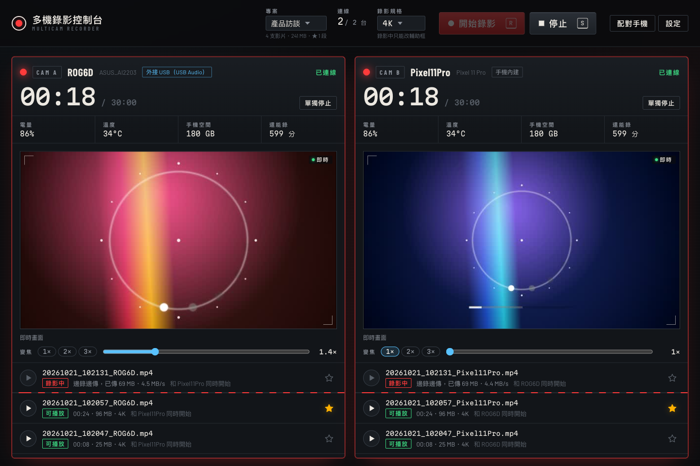
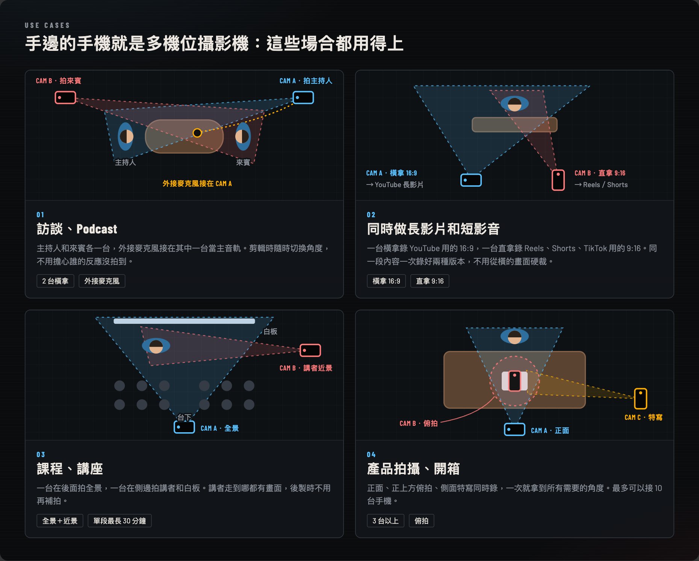
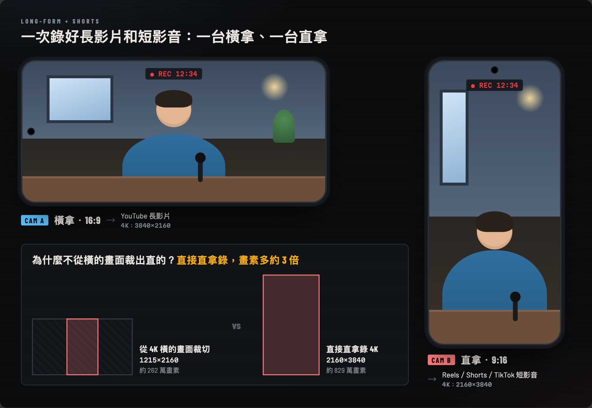
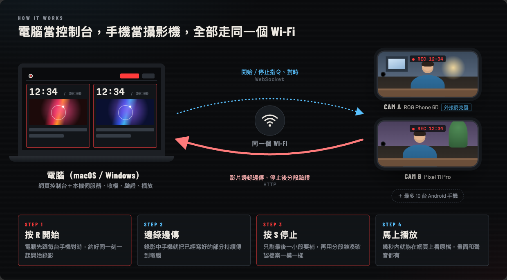
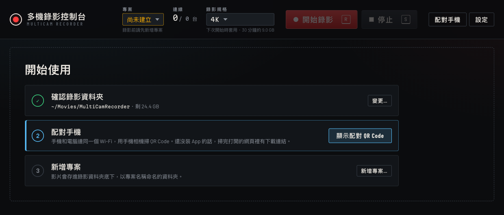
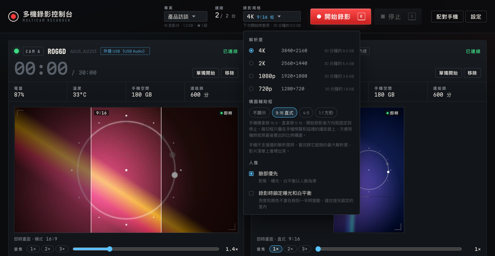
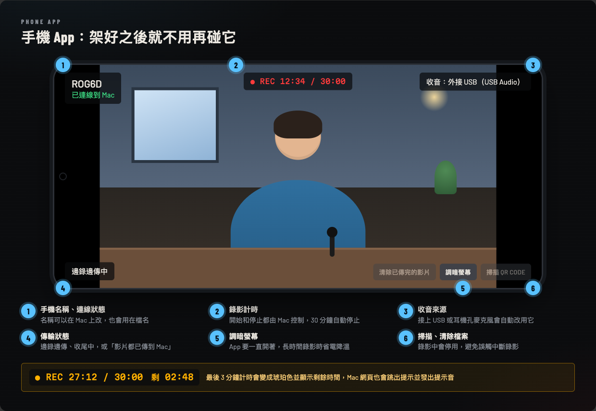
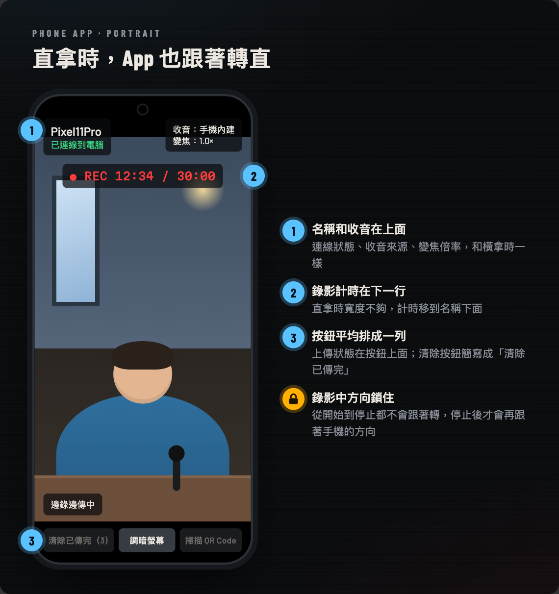
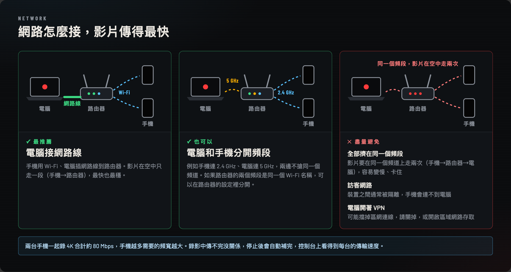

01
Interviews and podcasts
One phone on the host, one on the guest, with an external mic on one of them as the main audio track.
MULTICAM RECORDER
A free, open-source multi-camera tool. Watch every Android phone's live view, set each one's zoom, and press R to start them all at the same moment. Each phone records phone-native video up to 4K and uploads it to your computer while recording.
Latest v0.3.1・Computer: macOS or Windows・Phones: Android 12+・Interface in Traditional Chinese

MultiCam Recorder is a free, open-source multi-camera recording tool that turns the Android phones you already own into synchronized cameras. Open the web dashboard on your Mac or Windows PC to see every phone's live view, set each phone's zoom, and start all of them at the same moment with one key. Each phone records phone-native video locally and streams it to your computer while recording, so you can review it shortly after you stop. Everything stays on your local Wi-Fi: no cloud account, and your footage never leaves your network.
| Each phone on its own | With MultiCam Recorder | |
|---|---|---|
| Starting | Walk to each phone and tap record; starts are seconds apart | Press R once; every phone starts at a scheduled moment |
| Monitoring | You only see the phone in front of you | Live view of every phone on your computer |
| Getting files | Copy and rename each phone's files afterwards | Uploaded while recording, named and verified automatically |
| Status | You notice low battery or storage too late | Battery, temperature, free space and minutes left at a glance |
Whenever you need several angles but don't want to rent cameras and a switcher, the phones you already have will do.

One phone on the host, one on the guest, with an external mic on one of them as the main audio track.
One phone sideways for a 16:9 YouTube video, one upright for 9:16 Reels, Shorts or TikTok, in the same take.
A wide shot from the back and a close-up of the speaker or whiteboard from the side.
Front, overhead and close-up angles at once, with up to 10 phones.
The computer directs, monitors and collects; the phones just record. Every detail is about footage you can use right away.
Press R to start and S to stop every phone. The computer syncs clocks and schedules a common start, then shows the measured offset.
4K, 2K, 1080p or 720p for every phone. Takes run up to 30 minutes, with a warning 3 minutes before the end.
Sideways records 16:9, upright records 9:16. The app follows each phone and locks the orientation while recording.
USB and headset-jack mics are used automatically, and both the app and the dashboard show which mic is active.
About 5 frames per second from each phone for framing. Pressing record always switches every monitor back to the live view.
Presets and a slider for each phone; phones with ultra-wide or telephoto lenses switch lenses automatically.
9:16, 4:5 or 1:1 guides on the phone preview, the live view and the player; the full frame is always recorded.
Battery, temperature, free space, minutes left and transfer speed, plus warnings for low disk space, stalled uploads and lost phones.
Footage uploads while recording; after you stop, only the tail is sent and the file is verified chunk by chunk with SHA-256.
Phones keep recording if Wi-Fi drops, and uploads resume automatically when they reconnect.
Takes go into <recording folder>/<project>, named by time and phone so every angle of a take sorts together.
Star the good takes (all angles together) and move the rest to the Trash or Recycle Bin in one go.
Hold one phone sideways for a 16:9 YouTube video and another upright for 9:16 Reels, Shorts or TikTok. Recording portrait natively beats cropping: a 4K portrait phone records 2160×3840, while a 9:16 crop from a 4K landscape frame is only about 1215×2160, roughly 3× fewer pixels.


A local server on your computer serves the dashboard. The dashboard only opens on that computer, not on other devices on the network.
Recording happens on each phone (Camera2 + MediaRecorder), so Wi-Fi never limits image quality; it only carries control and files.
Footage is uploaded over HTTP in chunks. After you stop, both sides compare SHA-256 hashes and resend any chunk that differs.
The first setup takes about 10 minutes. After that, just run npm start and open the app on each phone.
cd into the multicam-recorder-main folder instead.git clone https://github.com/dean9703111/multicam-recorder.git cd multicam-recorder npm install npm start
When you see 控制台：http://localhost:8787, open http://localhost:8787 in your browser. The setup screen walks you through the recording folder (an external SSD is recommended), pairing and your first project. npm install is only needed the first time; press Ctrl+C in the terminal to stop.

Download MultiCamRecorder.apk from Releases and install it (Android will ask you to allow installing unknown apps). Then click 配對手機 (Pair phone) on the dashboard, scan the QR code with the phone's camera and tap the button on the page that opens. That page also links to the app download. Each phone only needs to be paired once.
<recording folder>/<project>.
The interface is currently in Traditional Chinese. Full documentation, including playback, starring, cleanup and troubleshooting, is in the README on GitHub.
The computer starts and stops recording. The app shows the connection, the recording timer, the mic in use, the zoom and the upload progress, and turns upright when the phone does.



| Price | Free, MIT license |
|---|---|
| Computer | macOS or Windows with Node.js 24+ |
| Phones | Android 12+, up to 10; no iPhone app yet |
| Resolution | 4K (3840×2160), 2K (2560×1440), 1080p, 720p at 30 fps; width and height swap in portrait |
| Format | MP4 (H.264 video, AAC audio), about 40 Mbps at 4K |
| Take length | Up to 30 minutes; about 9 GB per phone at 4K |
| Network | Phones and computer on the same Wi-Fi; footage stays on your local network |
| Audio | Built-in mic, or USB and headset-jack external mics |
| Live view | About 5 fps (640×360 landscape, 360×640 portrait) |
| Interface | Traditional Chinese |
Yes. MultiCam Recorder is open-source software under the MIT license. The computer side and the phone app are both free, with no ads, subscriptions or accounts.
Not yet. The phone app is available for Android 12 and later. The protocol between the computer and the phones is public (server/protocol.ts), so other platforms can be added.
Yes. Every push runs an end-to-end test on Windows, macOS and Linux in GitHub Actions with two simulated phones, covering pairing, live view, recording, transfer and verification. It has been used on an Apple Silicon Mac; Windows has not been used with real phones yet, so please open an issue if you hit a problem.
No cloud is involved. Recording and file transfer happen only between your phones and your computer over the same Wi-Fi network, with no account. Footage is saved to the recording folder you choose. You only need the internet to download the app and the program.
No. Each phone records phone-native video locally; Wi-Fi only carries control messages and file transfers. A slow network only makes the transfer take longer, and the rest is sent after you stop.
Streaming sends a live picture to the computer, so quality depends on the network; it suits live streaming. MultiCam Recorder records full quality on each phone and transfers the files, which suits shoots you edit afterwards. It does not live-stream.
Up to 10. More phones need more Wi-Fi bandwidth; two phones recording 4K need about 80 Mbps in total. See the network tips.
Yes. A phone held upright records 9:16 and a phone held sideways records 16:9, and you can mix them in the same take, for example one phone for a long-form video and one for shorts. See how it works.
The computer syncs clocks with every phone and schedules a common start time, and the dashboard shows the measured start offset between phones. For frame-accurate alignment, use your editor's audio sync.
The interface is currently in Traditional Chinese only.
Free, open source, no sign-up. Install the app, start the dashboard on your computer and record within ten minutes.